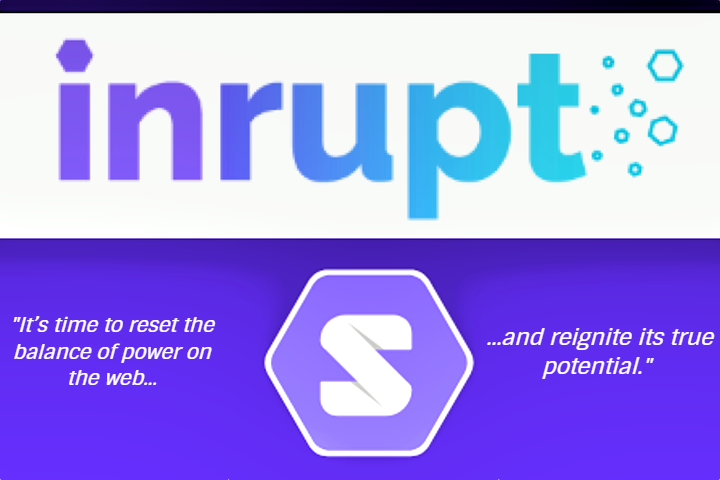
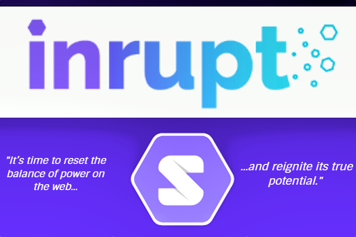
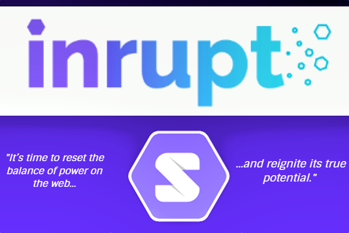

Photo de Tim Berners-Lee (à gauche) [26] ; Image d'Inrupt, avec le "S" du projet Solid [27] ; Citation : deuxième phrase de la page d'acceuil de Inrupt.com [28]

Photo de Tim Berners-Lee (à gauche) [26] ; Image d'Inrupt, avec le "S" du projet Solid [27] ; Citation : deuxième phrase de la page d'acceuil de Inrupt.com [28]
Sites Internet: Du Passé au Futur en Passant par la Création
L'Exemple de la Création de Mon Site
Partie 1 : Histoire
Création du Web
Avant de s'intéresser directement à l'histoire, certaines notions fondamentales en lien avec la programmation web, les langages de programmation et comment l'ordinateur gère tout cela, doivent être clarifiés.
Comme dit précdemment internet et le web sont deux choses bien distinctes et l'histoire d'internet en elle-même, remonte à plus loin vers le milieu des années 80'[7].
Le Web démarre en 1989 au CERN avec M. Berners-Lee et le "WordWideWeb" ou "W3". Berners-Lee eut l'idée d'une grande base de données accessible via internet, remplie de fichiers "Hypertexte".
Des documents liés entre eux par des références dites "hyperliens" (références à un document ou partie de document hypertexte.)
 Structure et liens des fichiers Hypertexte [8]
Structure et liens des fichiers Hypertexte [8]
Ces documents hypertexte, ces sites, seraient identifiés par une adresse qui leur est propre : leur URLs (Uniform Ressources Locator). Par exemple
"notions fondamentales", tout en haut de la page, est un hyperlien et son URL (que vous pouvez voir en bas à gauche de l'écran en laissant votre curseur sur le lien)
est : "https://arkiim.github.io/NotionsFondamentales.html"
Tout ce système de requêtes d'accès aux différentes adresses des différents sites, serait géré par le "Protocole de Transfert HyperText" ou HTTP HyperText Transfer Protocol.
C'est comme si les documents hypertexte étaient des maisons, les URLs, littéralement, l'adresse de ces maisons, les hyperliens le trajet jusqu'à elles et l'HTTP une sorte de taxi qui emprunterait le chemin qu'on lui indique.
Mais il manque une dernière chose, comment ces maisons sont-elles construites ? avec l'HTML, l'Hypertext Markup Language ou, littéralement, langage de balisage pour hypertexte. Le langage qui permet de créer des sites à l'aide de balises. Balises dont le fonctionnement sera expliqué plus tard. L'HTML va s'intégrer dans le système de couches vu tout au début, qui va permettre à l'utilisateur de voir le site et d'interagire avec.
Types de Web
Berners-Lee a décidé de rendre le Web publique et accessible à tous, en plus d'en abandonner la propriété
Grâce à cela et notamment au "W3C", le Web est sans cesse en expension et amélioration. Il y a d'ailleurs une intéressante citation de lui qui dit si on la traduit : "Si la technologie était restée un bien, et en mon contrôle total, elle n'aurait probablement pas eu le même succès. Vous ne pouvez pas attendre que quelque chose soit un espace universel et même temps en garder le contrôle" [10].
 Logo du Word Wide Web Consortium [11]
Logo du Word Wide Web Consortium [11]
Le Web a connu différentes phases, deux pour être précis :
-
- Le Web 1.0, tel qu'il était au tout début:
- Le Web statique
- Le Web en "lecture seule"
-
- Le Web 2.0, tel qu'on le connaît maintenant :
- Le Web avec une grande liberté
- Enormément d'interractions
- Enormément de collaboration
- Tout le monde peut participer sans avoir à savoir coder
Les deux phases majeurs du Web viennent d'être expliqués. Cependant d'aucuns disent qu'une troisième partie est en train d'emmerger, particulièrement avec l'IoT (Internet of Things, tout les objets connectés), cette troisième phase est le Web 3.0 dont les particularités seront expliqués plus tard.
D'ailleurs en parlant de futur, M.Berners-Lee a dit qu'il allait stopper ses activités et au MIT et en tant que chef du W3C, pour s'opposer au monopole du Web qu'exercent Google et Facebook. Il va à la place prendre la tête d'une startup nommée "Inrupt". Son but est le développement d'un projet open source (dont le code est libre de droit) baptisé "Solid".
Grâce a ce projet, chacun sera libre de choisir où sont stockées toutes ses données personnelles et de choisir quel service a accès à quelle information, quand et comment. [25] Selon cet article : "Avec Google puis Facebook, on a cessé de surfer sur le Web, pour y accéder par un entonnoir" de plus : "la multiplication des dispositifs et des interfaces, [...] atomise les audiences sous couvert de personnalisation."

Photo de Tim Berners-Lee (à gauche) [26] ; Image d'Inrupt, avec le "S" du projet Solid [27] ; Citation : deuxième phrase de la page d'acceuil de Inrupt.com [28]
Pour continuer sur cette idée d'entonnoir et de limitation, il est nécessaire de relever la citation de M.Berners-Lee qui dénonce la "double menace" [25] qu'est la suivante : "le mythe que la publicité est le seul modèle commercial possible pour les entreprises en ligne, et le mythe selon lequel il est trop tard pour changer le mode de fonctionnement des plates-formes "